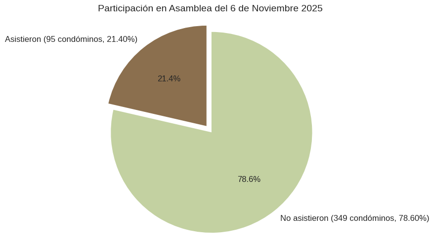

Asistencia a la Asamblea

De los 444 condóminos, asistieron 95 (21.40%)
Resultados de votación por punto del orden del día
-
I. Designación de Presidente, Secretario y Escrutador; Verificación del quórum para dar inicio a la Asamblea General Extraordinaria de Condóminos, así como la declaración de estar legalmente instalada la Asamblea y de la validez y obligatoriedad de las resoluciones y acuerdos que en la misma se tomen.
¿Están de acuerdo en los integrantes de Presidente, Secretario y Escrutador?Aprobado por unanimidad.
-
II. Se somete a votación que el segundo punto del orden del día quede sin efectos por duplicación logística.
Aprobado por unanimidad.
-
III. Discusión y, en su caso, aprobación sobre la revocación y/o terminación de la prestación de servicios de administración condominal de la persona moral AGENDUM S.A. de C.V.
¿Están de acuerdo por dar por terminada la prestación de servicios de administración condominal de la persona moral AGENDUM S.A. de C.V.?Aprobado por mayoría.
-
IV. Presentación y, en su caso, aprobación del acto formal de entrega-recepción de la primera administración del condominio, conforme al Título Primero, fracción V, inciso h) del Reglamento Interno.
Aprobado por unanimidad.
-
V. Propuesta, y en su caso, aprobación para designación y contratación de la Persona Moral que quedará a cargo de la Administración del Condominio.
¿Están de acuerdo con el cambio de la empresa a cargo de la Administración del Condominio sea DEFAST DEFENSA Y ASESORÍA TRIBUTARIA S.C.?Aprobado por mayoría.